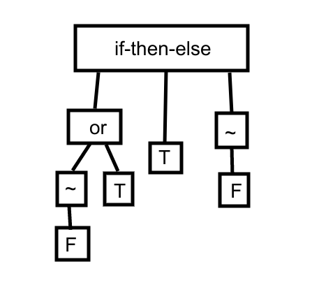
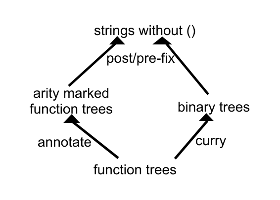

Trees, Strings, and their Bijections
Thomas Porter, August 12, 2020
While working on my programming language, I noticed a pleasing bijection between the set of binary trees and the set of general trees (these trees being finite, rooted, with ordered children, with nodes containing no extra data, and considered up to isomorphism). I would never have thought such a bijection could possibly be very natural, and I would have a very hard time coming up with a good one, except for one key clue: currying.
This bijection comes from considering these trees as representing trees of function application. Consider a structure, the elements of which are supposed to represent functions, and the sole binary operation of which represents function application. In this case, functions should be thought of as "higher order," so that functions can be applied to functions, and can output functions. An expression in this syntax will be a binary tree, with each leaf being a function and each node being an instance of the function application operation between its two children.

In systems like this, since each function can only be applied to one argument, it is not obvious how to encode a function of "arity" (number of inputs) greater than 1, like addition (which is binary). The standard method is called "currying," named after Haskell Curry. When you curry a function like addition, you change it from a function that takes in two numbers and outputs one number, and turn it into a function that takes in one number (the first argument) and outputs a new function, which itself takes in one number (the second argument) and outputs one number (the result). So the second tree above, representing f(g)(h), has the same structure as a curried addition applied to two numbers +(1)(2) = 3. Just to avoid confusion, note that if we are in a system in which everything is a function, numbers would have to either be encoded as functions, like Church encodings in lambda calculus, or could be considered nullary (0 arity) functions.
So this is the binary tree side. But expressions of function application can also be expressed, more naturally perhaps, using general trees, in which each node is a function, and its children are its arguments. This is like a traditional abstract syntax tree in computer science.
Here each node is a function, with the number of children being the number of arguments. Constants like true (T) and false (F) take no arguments, so are leaves. The if-then-else function takes three arguments.
I have stated two ways of corresponding expressions of function application with trees, and thus implicitly a correspondence between those two types of trees. So, to map a binary tree onto a general tree, just imagine it represents curried function application, and construct that function tree, and vice versa. The resulting bijection is very pleasing (note that the binary function application trees are reversed from their normal orientation; this is because the pasture programming language embraces a left to right philosophy, so the function comes after the arguments):
g (orange) takes in three arguments, which are curried in the left tree but children in the right tree. This bijection can be seen as a contraction of contiguous diagonals (the colored diagonals) into single nodes, with an expansion as the inverse. Notice how each colored diagonal has "children" given by the trees that are branching down from it in the other diagonal direction. This bijection is apparently from binary trees with labeled leaves to general trees with labeled nodes, but when such labels are trivial is also a bijection between unlabeled binary trees and unlabeled general trees.
After identifying this bijection, I also wondered about string representation. In pasture, expressions are written as infix binary function application trees, with spaces representing the function application operation. This necessitates parentheses, as infix notation generally does.
a b ((c (d e)) (f g))
Although using my delayed application notation, this can be improved to:
a b,(c,d e),f g
These strings, ignoring parentheses, can also be thought of as a postfix representation of the general function application trees. But postfix famously does not require parentheses, as long as the arity of each function is known (which it is not, in pasture). So this raises the question; should these trees be represented as postfix/prefix strings of the binary application tree, where the arity of the sole operation (function application) is known, and parenthesis are not needed? Well, here is what that would look like for the binary tree in the example picture (with '*' denoting the function application operation):
a b * c d e * * f g * * *
Let's compress all these repeated '*'s.
a b (1) c d e (2) f g (3)
But this is the same as annotating each function with its arity!
a (0) b (1) c (0) d (0) e (2) f (0) g (3)
This discovery rather delights me. I thought I had found a new way to circumvent the need for parentheses, and it unexpectedly reduced to the old way to circumvent it!
Here's a rough approximation of the commutative diagram:
I hope you enjoyed this post! What's your favorite bijection?